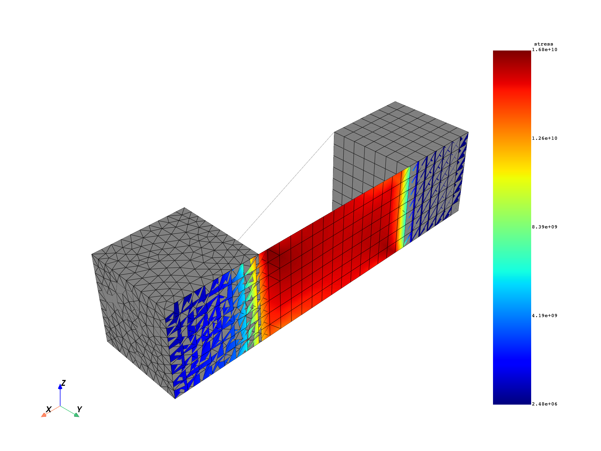
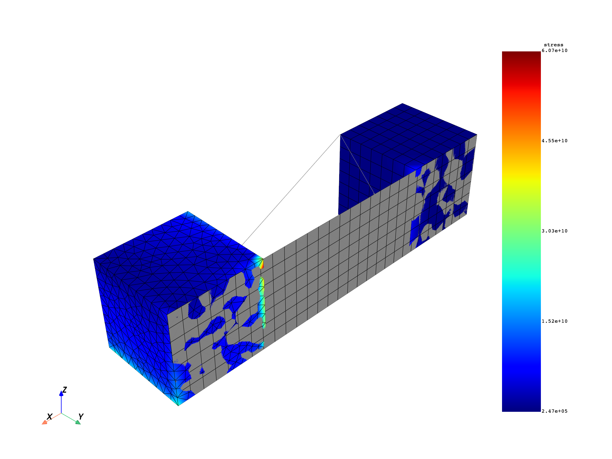
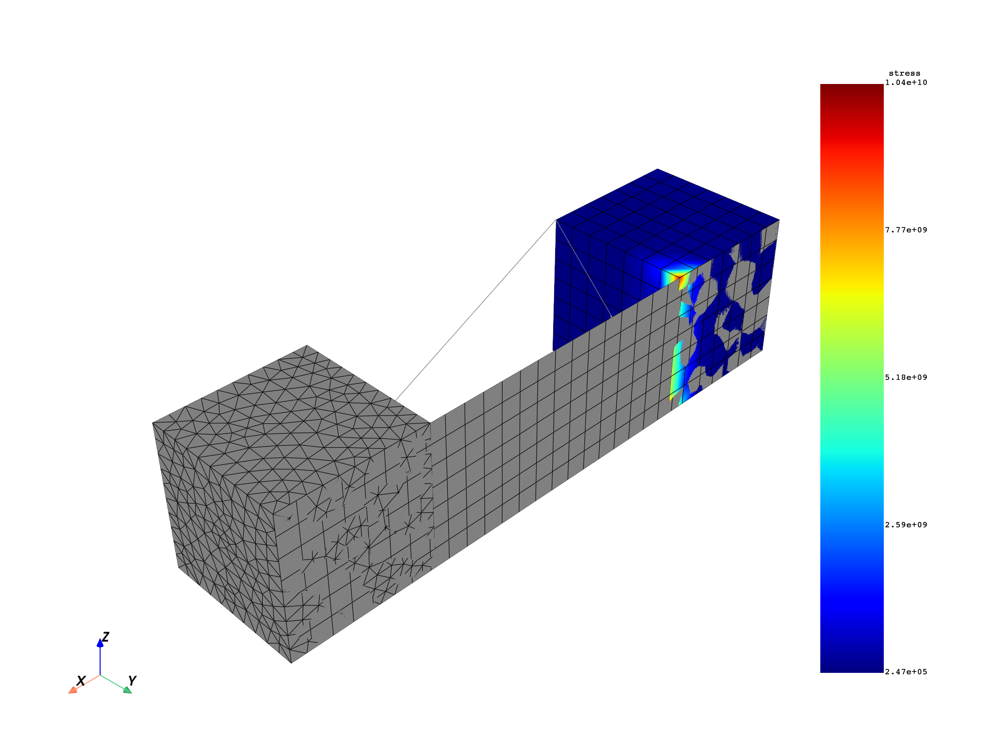
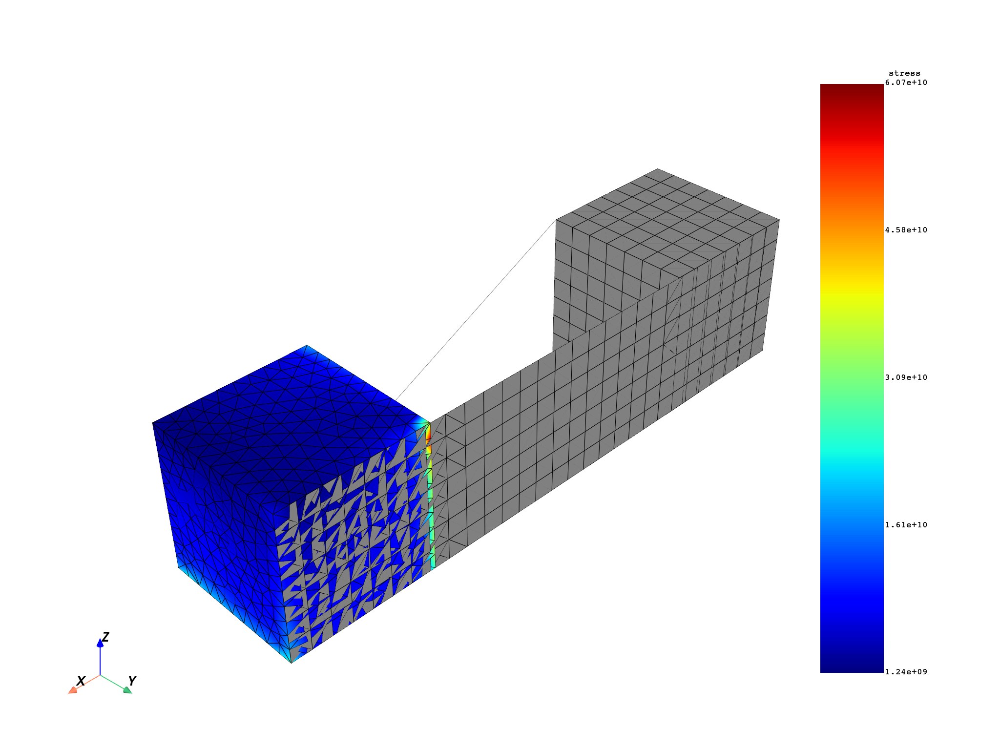
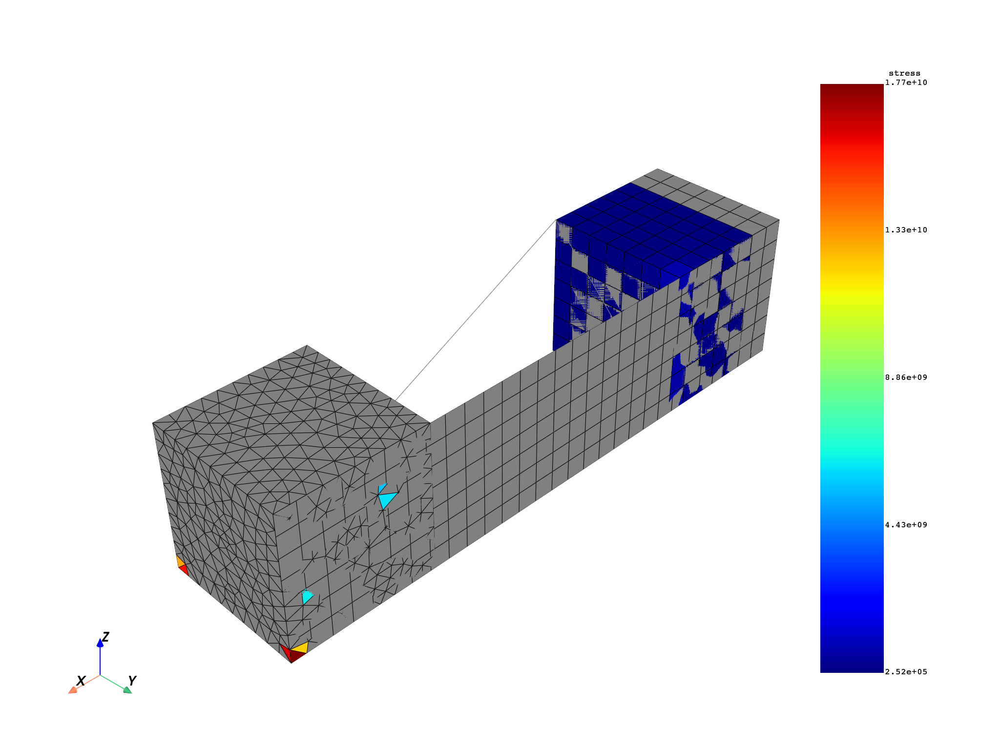
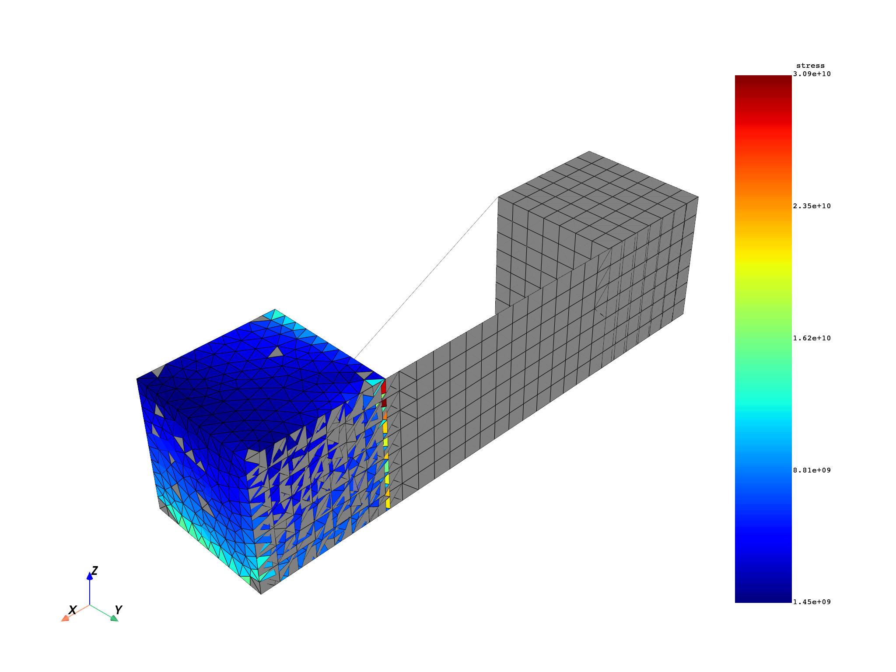

Note
Click here to download the full example code
Scope results over custom space domains#
The Result class, which are instances
created by the Model, give
access to helpers for requesting results on specific mesh and time scopings.
With these helpers, working on a spatial subset of the model is straightforward.
In this example, different ways to choose the spatial subset to
evaluate a result are exposed
Import necessary modules:
from ansys.dpf import core as dpf
from ansys.dpf.core import examples
Create a model object to establish a connection with an example result file:
model = dpf.Model(examples.download_all_kinds_of_complexity())
print(model)
DPF Model
------------------------------
Static analysis
Unit system: MKS: m, kg, N, s, V, A, degC
Physics Type: Mechanical
Available results:
- displacement: Nodal Displacement
- reaction_force: Nodal Force
- element_nodal_forces: ElementalNodal Element nodal Forces
- stress: ElementalNodal Stress
- elemental_volume: Elemental Volume
- stiffness_matrix_energy: Elemental Energy-stiffness matrix
- artificial_hourglass_energy: Elemental Hourglass Energy
- thermal_dissipation_energy: Elemental thermal dissipation energy
- kinetic_energy: Elemental Kinetic Energy
- co_energy: Elemental co-energy
- incremental_energy: Elemental incremental energy
- elastic_strain: ElementalNodal Strain
- thermal_strain: ElementalNodal Thermal Strains
- thermal_strains_eqv: ElementalNodal Thermal Strains eqv
- swelling_strains: ElementalNodal Swelling Strains
- structural_temperature: ElementalNodal Structural temperature
------------------------------
DPF Meshed Region:
15129 nodes
10292 elements
Unit: m
With solid (3D) elements, shell (2D) elements, shell (3D) elements, beam (1D) elements
------------------------------
DPF Time/Freq Support:
Number of sets: 1
Cumulative Time (s) LoadStep Substep
1 1.000000 1 1
Choose specific nodes#
If some nodes or elements are specifically of interest, a nodal mesh_scoping
can be connected.
nodes_scoping = dpf.mesh_scoping_factory.nodal_scoping(range(400, 500))
print(nodes_scoping)
DPF Scoping:
with Nodal location and 100 entities
or
nodes_scoping = dpf.Scoping(ids=range(400, 500), location=dpf.locations.nodal)
print(nodes_scoping)
DPF Scoping:
with Nodal location and 100 entities
disp = model.results.displacement.on_mesh_scoping(nodes_scoping).eval()
model.metadata.meshed_region.plot(disp)
Equivalent to:
disp_op = model.results.displacement()
disp_op.inputs.mesh_scoping(nodes_scoping)
disp = disp_op.outputs.fields_container()
Equivalent to:
disp = model.results.displacement(mesh_scoping=nodes_scoping).eval()
Choose specific elements#
If some elements are specifically of interest, an elemental mesh_scoping
can be connected.
elements_scoping = dpf.mesh_scoping_factory.elemental_scoping(range(500, 5000))
print(elements_scoping)
# or
elements_scoping = dpf.Scoping(ids=range(500, 5000), location=dpf.locations.elemental)
print(elements_scoping)
volume = model.results.elemental_volume.on_mesh_scoping(elements_scoping).eval()
model.metadata.meshed_region.plot(volume)
DPF Scoping:
with Elemental location and 4500 entities
DPF Scoping:
with Elemental location and 4500 entities
Equivalent to:
volume_op = model.results.elemental_volume()
volume_op.inputs.mesh_scoping(elements_scoping)
volume = volume_op.outputs.fields_container()
Equivalent to:
volume = model.results.elemental_volume(mesh_scoping=elements_scoping).eval()
Choose specific named selections#
Named selections (also known as components) can be selected to create
a spatial domain for a result. A mesh_scoping can be created with a
named selection.
To know the available named selections in the result file, use:
print(model.metadata.available_named_selections)
['_CM82', '_CM86UX_XP', '_DISPNONZEROUX', '_DISPZEROUZ', '_ELMISC', '_FIXEDSU']
Get the mesh_scoping of a named selection:
mesh_scoping = model.metadata.named_selection("_CM82")
print(mesh_scoping)
DPF Scoping:
with Elemental location and 8709 entities
Connect this mesh_scoping to the result provider
volume = model.results.elemental_volume(mesh_scoping=mesh_scoping).eval()
model.metadata.meshed_region.plot(volume)
Equivalent to:
volume = model.results.elemental_volume.on_named_selection("_CM82")
Equivalent to:
ns_provider = dpf.operators.scoping.on_named_selection(
requested_location=dpf.locations.elemental,
named_selection_name="_CM82",
data_sources=model,
)
volume = model.results.elemental_volume(mesh_scoping=ns_provider).eval()
Split results depending on spatial properties#
For many applications, it can be useful to request results on different subsets
of the model. The ScopingsContainer entity contains different Scopings
and can be connected to any result provider to get results split with the
same partition as the input ScopingsContainer.
For example, some application require to get results split by body, by material,
by element types. It might also be necessary to get results by element shape
types, such as shell, solid, or beam, to average data properly.
Customers might also require split by entirely custom spatial domains.
Split results by element shapes
stress = model.results.stress.split_by_shape.on_location(dpf.locations.nodal).eval()
print(stress)
shell_stresses = stress.shell_fields()
model.metadata.meshed_region.plot(shell_stresses[0])
solid_stresses = stress.solid_fields()
model.metadata.meshed_region.plot(solid_stresses[0])
- 
- 
DPF stress(s)Fields Container
with 4 field(s)
defined on labels: elshape time
with:
- field 0 {elshape: 0, time: 1} with Nodal location, 6 components and 240 entities.
- field 1 {elshape: 1, time: 1} with Nodal location, 6 components and 14826 entities.
- field 2 {elshape: 2, time: 1} with Nodal location, 6 components and 0 entities.
- field 3 {elshape: 3, time: 1} with Nodal location, 6 components and 0 entities.
Split results by bodies
stress = model.results.stress.split_by_body.on_location(dpf.locations.nodal).eval()
print(stress)
for body_id in stress.get_mat_scoping().ids:
fields = stress.get_fields_by_mat_id(body_id)
for field in fields:
if field.elementary_data_count > 0:
model.metadata.meshed_region.plot(field)
- 
- 
DPF stress(s)Fields Container
with 3 field(s)
defined on labels: elshape mat time
with:
- field 0 {elshape: 2, mat: 1, time: 1} with Nodal location, 6 components and 1856 entities.
- field 1 {elshape: 1, mat: 1, time: 1} with Nodal location, 6 components and 240 entities.
- field 2 {elshape: 2, mat: 2, time: 1} with Nodal location, 6 components and 12970 entities.
Create a custom spatial split
scopings_container = dpf.ScopingsContainer()
scopings_container.add_label("custom_split")
scopings_container.add_scoping(
{"custom_split": 1},
dpf.Scoping(ids=range(100, 500), location=dpf.locations.elemental),
)
scopings_container.add_scoping(
{"custom_split": 2},
dpf.Scoping(ids=range(500, 5000), location=dpf.locations.elemental),
)
elemental_stress = model.results.stress.on_location(dpf.locations.elemental)(
mesh_scoping=scopings_container
).eval()
print(elemental_stress)
for field in elemental_stress:
model.metadata.meshed_region.plot(field)
- 
- 
DPF stress(s)Fields Container
with 2 field(s)
defined on labels: custom_split time
with:
- field 0 {custom_split: 1, time: 1} with Elemental location, 6 components and 400 entities.
- field 1 {custom_split: 2, time: 1} with Elemental location, 6 components and 4500 entities.
Total running time of the script: ( 0 minutes 12.101 seconds)